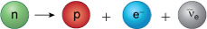
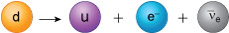
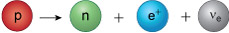
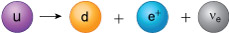
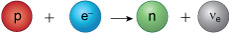
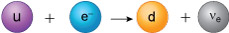

7 Beta-decay at the level of quarks and leptons¶
To conclude your exploration of the particle world, you will now examine more closely the radioactive processes in which particles change flavour, as this will lead you to the final type of fundamental interaction in which particles participate.
A particular type of radioactivity is known as beta-decay, which occurs in three forms known as beta-minus decay, beta-plus decay and electron capture. In each form, protons convert into neutrons, or vice-versa. For instance, in beta-minus decay, one of the neutrons in a nucleus is converted into a proton in a process that may be written as:

As a neutron has the quark composition (udd) and a proton has the quark composition (uud), at the level of individual quarks, a beta-minus decay must involve a down quark converting into an up quark as follows:

This quark conversion therefore lies at the heart of all beta-minus decay processes. A quick check confirms that electric charge is conserved in this process. The charge on the left-hand side of the equation is −e3, while the sum of the charges of the particles on the right-hand side is +2e3−e+0=−e3 also.
Following the example above, try to work out what quarks are involved in the conversions below:
Question¶
In beta-plus decay, a proton is converted into a neutron with the emission of a positron and an electron neutrino:

What is the quark conversion process that lies at the heart of beta-plus decay? Confirm that electric charge is conserved.
Answer¶
At the level of individual quarks, this is:

The electric charge on the left-hand side is +2e3 while that on the right-hand side is − e3+e+0=+2e3, as expected.
Question¶
In electron capture, a proton is converted into a neutron when it captures an electron, and subsequently emits an electron neutrino:

Write down the quark conversion process that lies at the heart of electron capture. Confirm that electric charge is conserved.
Answer¶
At the level of individual quarks, this is:

The electric charge on the left hand side is +2e3−e=−e3, while that on the right hand side is −e3+0=−e3 as expected. To end this course, you will consider the explanation for these flavour-changing reactions in terms of the final fundamental interaction found in nature, known as the weak interaction.